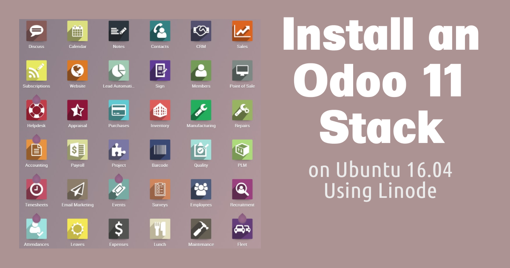
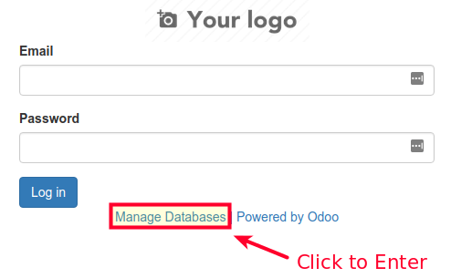
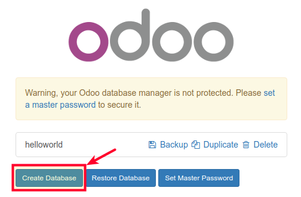
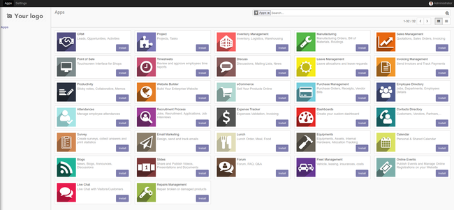

Install an Odoo 11 Stack on Ubuntu 16.04
Updated by Linode Contributed by Damaso Sanoja

What is Odoo?
Odoo (formerly known as OpenERP) is a self-hosted suite of over 10,000 open source applications for a variety of business needs, including CRM, eCommerce, accounting, inventory, point of sale, and project management. These applications are all fully integrated and can be installed and accessed through a web interface, making it easy to automate and manage your company’s processes.
For simple installations, Odoo and its dependencies can be installed on a single Linode (see our Install Odoo 10 on Ubuntu guide for details). However, this single-server setup is not suited for production deployments. This guide covers how to configure a production Odoo 11 cluster in which the Odoo server and PostgreSQL database are hosted on separate Linodes, with database replication for added performance and reliability.
System Requirements
The setup in this guide requires the following minimal Linode specifications:
- PostgreSQL databases (master and slave) - Linode 2GB
- Odoo 11 web application - Linode 1GB
Keep in mind that your implementation may need more nodes or higher-memory plans depending on the number of end-users you want to serve and the number of modules you plan to incorporate.
All examples in this guide are for Ubuntu 16.04. If you plan to use a different operating system, adapt the commands as necessary.
Before You Begin
Familiarize yourself with our Getting Started guide and complete the steps for setting your Linode’s hostname and timezone.
This guide will use
sudowherever possible. Complete the sections of our Securing Your Server to create a standard user account, harden SSH access and remove unnecessary network services.Update your system:
sudo apt-get update && sudo apt-get upgradeInstall
software-properties-common:sudo apt install software-properties-common
Configure Firewall Rules for Odoo
If you want to configure a firewall for your Linodes, open the following ports:
| Node | Open TCP Ports |
|---|---|
| Odoo 11 application | 22, 6010, 5432, 8070 |
| PostgreSQL database (Master & Slave) | 22, 6010, 5432 |
Ports 22, 80, and 5432 are the defaults for SSH, HTTP and PostgreSQL communications respectively. Port 6010 is used for Odoo communications and port 8070 is used by Odoo’s webserver. To open a particular port you can use:
sudo ufw allow 22/tcp
For more detailed information about firewall setup please read our guide How to Configure a Firewall with UFW.
Hostname Assignment
In order to simplify communication between Linodes, set hostnames for each server. You can use private IPs if the Linodes are all in the same data center, or Fully Qualified Domain Names (FQDNs) if available. This guide will use the following FQDN and hostname conventions:
| Node | Hostname | FQDN |
|---|---|---|
| Odoo 11 | odoo | odoo.yourdomain.com |
| PostgreSQL Master | masterdb | masterdb.yourdomain.com |
| PostgreSQL Slave | slavedb | slavedb.yourdomain.com |
PostgreSQL Master:
- /etc/hosts
-
1 2 3 4 5127.0.0.1 localhost 127.0.1.1 masterdb.yourdomain.com masterdb 10.1.1.20 slavedb.yourdomain.com slavedb 10.1.3.10 odoo.yourdomain.com odoo
PostgreSQL Slave:
- /etc/hosts
-
1 2 3 4 5127.0.0.1 localhost 127.0.1.1 slavedb.yourdomain.com slavedb 10.1.1.10 masterdb.yourdomain.com masterdb 10.1.3.10 odoo.yourdomain.com odoo
Odoo 11 server:
- /etc/hosts
-
1 2 3 4 5127.0.0.1 localhost 127.0.1.1 odoo.yourdomain.com odoo 10.1.1.10 masterdb.yourdomain.com masterdb 10.1.1.20 slavedb.yourdomain.com slavedb
FQDNs will be used throughout this guide whenever possible to avoid confusion.
Set up PostgreSQL
Configure the database backend. A Master node will be in charge of all transactions and additionally will stream to a secondary server: the Slave.
Install PostgreSQL
PostgreSQL version 9.6 offers significant improvements for database replication, but unfortunately, it is not included in the default Ubuntu 16.04 repositories. Install the newest version on all database nodes.
Add the official PostgreSQL-Xenial repository to your system:
sudo add-apt-repository "deb http://apt.postgresql.org/pub/repos/apt/ xenial-pgdg main"Import the repository key:
wget --quiet -O - https://www.postgresql.org/media/keys/ACCC4CF8.asc | sudo apt-key add -Update
aptcache:sudo apt updateInstall PostgreSQL 9.6 in the database nodes:
sudo apt install postgresql-9.6 postgresql-server-dev-9.6
Create PostgreSQL Users
Begin with the PostgreSQL user needed for Odoo communications. Create this user on both Master and Slave nodes.
Switch to the
postgresuser and create the database userodooin charge of all operations. Use a strong password and save it in a secure location, you will need it later:sudo -u postgres createuser odoo -U postgres -dRSPUse the same password for the Odoo
postgresuser on all nodes. Odoo is not aware of database replication, so it will be easier to trigger an eventual failover procedure if both servers share the same information.Now you need to create the
replicauseron the Master node:sudo -u postgres createuser replicauser -U postgres -P --replicationSet a strong password that you’ll remember.
The
replicauseruser has fewer privileges than theodoouser because thereplicauser’s only purpose is to allow the Slave to read information from the Master nodes. The--replicationoption grants the required privilege thatreplicauserneed to perform its job.
Configure Host Based Authentication
Stop the PostgreSQL service on all nodes:
sudo systemctl stop postgresqlEdit
pg_hba.confto allow PostgreSQL nodes to communicate with each other. Add the following lines to the Master database server:- /etc/postgresql/9.6/main/pg_hba.conf
-
1 2host replication replicauser slavedb.yourdomain.com md5 host all odoo odoo.yourdomain.com md5
Each line provides the client authentication permissions to connect to a specific database. For example, the first line allows the Slave to connect to the Master node using
replicauser, and the second line grants theodoouser the rights connect toalldatabases within this server.Add a similar configuration to the Slave node, this will make it easier to promote it to
masterstatus if necessary:- /etc/postgresql/9.6/main/pg_hba.conf
-
1host all odoo odoo.yourdomain.com md5
The settings in the pg_hba.conf file are:
host: Enables connections using Unix-domain sockets.replication: Specifies a replication connection for the given user. No database name is required for this type of connection.replicauser: The user created in the previous section.md5: Make use of client-supplied MD5-encrypted password for authentication.all: Match all databases in the server. You could provide specific Odoo database names (separated by commas if more than one) if you know them beforehand.odoo: The Odoo user responsible for application/database communications.
Configure Archiving and Replication
On the Master node
Create an
archivedirectory for WAL files:sudo mkdir -p /var/lib/postgresql/9.6/main/archive/Change the
archivedirectory permissions to allow thepostgresuser to read and write:sudo chown postgres: -R /var/lib/postgresql/9.6/main/archive/Edit
postgresql.conf, and uncomment lines as necessary:- /etc/postgresql/9.6/main/postgresql.conf
-
1 2 3 4 5 6 7 8 9 10 11 12#From CONNECTIONS AND AUTHENTICATION Section listen_addresses = '*' #From WRITE AHEAD LOG Section wal_level = replica min_wal_size = 80MB max_wal_size = 1GB archive_mode = on archive_command = 'cp %p /var/lib/postgresql/9.6/main/archive/%f' archive_timeout = 1h #From REPLICATION Section max_wal_senders = 3 wal_keep_segments = 10
On the Slave node
Edit the Slave’s postgresql.conf:
- /etc/postgresql/9.6/main/postgresql.conf
-
1 2 3 4 5 6 7listen_addresses = '*' #From WRITE AHEAD LOG Section wal_level = replica #From REPLICATION Section max_wal_senders = 3 wal_keep_segments = 10 hot_standby = on
These settings are:
listen_addresses: What IP addresses lo listen on. The'*'means that the server will listen to all IP addresses. You can limit this to only include the IP addresses that you consider safe.wal_level: Set toreplicato perform the required operations.min_wal_size: Minimum size the transaction log will be.max_wal_size: Actual target size of WAL at which a new checkpoint is triggered.archive_mode: Set toonto activate the archive storage (see below).archive_timeout: Forces the server to send a WAL segment periodically (even ifmin_wal_sizeis not reached). This is useful if you expect little WAL traffic.archive_command: Local shell command to execute in order to archive a completed WAL file segment.max_wal_senders: Maximum number of concurrent connections from the Slave node.wal_keep_segments: Minimum number of past log file segments kept in thepg_xlogdirectory, in case a standby server (Slave node) needs to fetch them for streaming replication.hot_standby = on: Specifies that the Slave server can connect and run queries during recovery.
Synchronize Master and Slave Node Data
Confirm that the Slave PostgreSQL service is not running:
sudo systemctl status postgresqlStart the Master PostgreSQL service:
sudo systemctl start postgresqlRename the Slave’s data directory before continuing:
sudo mv /var/lib/postgresql/9.6/main /var/lib/postgresql/9.6/main_oldFrom the Slave node, enter the following to transfer all of the Master’s data over:
sudo -u postgres pg_basebackup -h masterdb.yourdomain.com --xlog-method=stream \ -D /var/lib/postgresql/9.6/main/ -U replicauser -v -PYou will be prompted with the
replicauserpassword. Once the transfer is complete your Slave will be synchronized with the Master database. This puts an exact replica of the Master database on the Slave.
CautionDo not start the Slave’s PostgreSQL service until Step 3 of the next section, when all configuration is complete.
Create the Recovery File on the Slave Node
Copy the sample recovery file as a template for your requirements:
sudo cp -avr /usr/share/postgresql/9.6/recovery.conf.sample \ /var/lib/postgresql/9.6/main/recovery.confEdit the new copy of the recovery file:
- /var/lib/postgresql/9.6/main/recovery.conf
-
1 2 3 4standby_mode = 'on' primary_conninfo = 'host=masterdb.yourdomain.com port=5432 user=replicauser password=REPLICAUSER_PWD' restore_command = 'cp /var/lib/postgresql/9.6/main/archive/%f %p' trigger_file = '/tmp/postgresql.trigger.5432'
Start the PostgreSQL service on the Slave node:
sudo systemctl start postgresql
These parameters configure your Slave to restore data. Failover and more options are described in the PostgreSQL documentation for recovery.
Test Replication
Test your setup to check that everything works as expected.
In the Master server change to the
postgresuser and verify the replication status:sudo -u postgres psql -x -c "select * from pg_stat_replication;"-[ RECORD 1 ]----+------------------------------ pid | 6005 usesysid | 16385 usename | replicauser application_name | walreceiver client_addr | 66.228.54.56 client_hostname | client_port | 36676 backend_start | 2018-01-23 19:14:26.573184+00 backend_xmin | state | streaming sent_location | 0/6000F60 write_location | 0/6000F60 flush_location | 0/6000F60 replay_location | 0/6000F60 sync_priority | 0 sync_state | asyncTo see the replication in action, create a test database on your Master server with the
odoouser:sudo createdb -h localhost -p 5432 -U odoo helloworldOn the Slave, check the presence of the new database you just created using the
postgresuser andpsql:sudo -u postgres psqlList all databases:
\lExit
psql:\q
This test not only confirms that replication is working, but also that the odoo user is ready to perform database operations.
Enable PostgreSQL on Startup
Enable the postgresql service on both masterdb and slavedb:
sudo systemctl enable postgresql
Odoo 11 Setup
Configure your Odoo 11 web application to work with the PostgreSQL database backend.
Create the Odoo User
In order to separate Odoo from other services, create a new Odoo system user to run its processes:
sudo adduser --system --home=/opt/odoo --group odoo
Configure Logs
The examples in this guide use a separate file for logging Odoo activity:
sudo mkdir /var/log/odoo
Install Odoo 11
Install git:
sudo apt install gitUse Git to clone the Odoo files onto your server:
sudo git clone https://www.github.com/odoo/odoo --depth 1 \ --branch 11.0 --single-branch /opt/odooNote
Odoo 11 application now uses Python 3.x instead of Python 2.7. If you are using Ubuntu 14.04 this may mean additional steps for your installation. Dependencies are now grouped to highlight the new changes.Enforce the use of POSIX locale this will prevent possible errors during installation (this has nothing to do with the Odoo language):
export LC_ALL=CInstall new Python3 dependencies:
sudo apt-get install python3 python3-pip python3-suds python3-all-dev \ python3-dev python3-setuptools python3-tkInstall global dependencies (common to Odoo version 10):
sudo apt install git libxml2-dev libxslt1-dev libevent-dev libsasl2-dev libldap2-dev \ pkg-config libtiff5-dev libjpeg8-dev libjpeg-dev zlib1g-dev libfreetype6-dev \ liblcms2-dev liblcms2-utils libwebp-dev tcl8.6-dev tk8.6-dev libyaml-dev fontconfigInstall Odoo 11 specific Python dependencies:
sudo -H pip3 install --upgrade pip sudo -H pip3 install -r /opt/odoo/doc/requirements.txt sudo -H pip3 install -r /opt/odoo/requirements.txtInstall Less CSS via Node.js and npm:
sudo curl -sL https://deb.nodesource.com/setup_6.x | sudo -E bash - \ && sudo apt-get install -y nodejs \ && sudo npm install -g less less-plugin-clean-cssDownload the
wkhtmltopdfstable package. Replace the version number0.12.4in this command with the latest release on Github:cd /tmp wget https://github.com/wkhtmltopdf/wkhtmltopdf/releases/download/0.12.4/wkhtmltox-0.12.4_linux-generic-amd64.tar.xzExtract the package:
tar -xvf wkhtmltox-0.12.4_linux-generic-amd64.tar.xzTo ensure that
wkhtmltopdffunctions properly, move the binaries to a location in your executable path and give them the necessary permission for execution:sudo mv wkhtmltox/bin/wk* /usr/bin/ \ && sudo chmod a+x /usr/bin/wk*
Configure the Odoo Server
Copy the included configuration file to
/etc/and change its name toodoo-server.confsudo cp /opt/odoo/debian/odoo.conf /etc/odoo-server.confModify the configuration file. The complete file should look similar to the following, depending on your deployment needs:
- /etc/odoo-server.conf
-
1 2 3 4 5 6 7 8 9[options] admin_passwd = admin db_host = masterdb.yourdomain.com db_port = False db_user = odoo db_password = odoo_password addons_path = /opt/odoo/addons logfile = /var/log/odoo/odoo-server.log xmlrpc_port = 8070
admin_passwd: The password that allows administrative operations within Odoo GUI. Be sure to changeadminto something more secure.db_host: The masterdb FQDN.db_port: Odoo uses PostgreSQL’s default port5432, change this only if you’re using custom PostgreSQL settings.db_user: Name of the PostgreSQL database user.db_password: Use the PostgreSQLodoouser password you created previously.addons_path: Default addons path, you can add custom paths separating them with commas:</path/to/custom/modules>logfile: Path to your Odoo logfiles.xmlrpc_port: Port that Odoo will listen on.
Create an Odoo Service
Create a systemd unit called odoo-server to allow your application to behave as a service. Create a new file at /lib/systemd/system/odoo-server.service and add the following:
- /lib/systemd/system/odoo-server.service
-
1 2 3 4 5 6 7 8 9 10 11 12 13 14[Unit] Description=Odoo Open Source ERP and CRM [Service] Type=simple PermissionsStartOnly=true SyslogIdentifier=odoo-server User=odoo Group=odoo ExecStart=/opt/odoo/odoo-bin --config=/etc/odoo-server.conf --addons-path=/opt/odoo/addons/ WorkingDirectory=/opt/odoo/ [Install] WantedBy=multi-user.target
Change File Ownership and Permissions
Change the
odoo-serverservice permissions and ownership so only root can write to it, while theodoouser will only be able to read and execute it:sudo chmod 755 /lib/systemd/system/odoo-server.service \ && sudo chown root: /lib/systemd/system/odoo-server.serviceSince the
odoouser will run the application, change its ownership accordingly:sudo chown -R odoo: /opt/odoo/Set the
odoouser as the owner of log directory as well:sudo chown odoo:root /var/log/odooProtect the server configuration file. Change its ownership and permissions so no other non-root user can access it:
sudo chown odoo: /etc/odoo-server.conf \ && sudo chmod 640 /etc/odoo-server.conf
Test your Odoo Stack
Confirm that everything is working as expected.
Start the Odoo server:
sudo systemctl start odoo-serverConfirm that
odoo-serveris running:sudo systemctl status odoo-serverIn a browser, navigate to
odoo.yourdomain.comor the IP address of the odoo Linode. If your proxy and your DNS configuration are working properly a login screen will appear.Click on the Manage Databases link:

Now you can see the test database you created earlier.
Click Create Database and fill out the form with a test database. Check the Load demonstation data box to populate your database with sample data.

In the browser, you should see a list of available apps, indicating that database creation was successful:

The first time you create a database, Odoo may take several minutes to load all of its add-ons. Do not reload the page during this process.
Enable the Odoo Service
Enable the
odoo-serverservice to start automatically on reboot:sudo systemctl enable odoo-serverReboot your Linode from the Linode Manager.
Check the Odoo logs to verify that the Odoo server is running:
sudo cat /var/log/odoo/odoo-server.log
Back Up Odoo Databases
If all components of the Odoo stack are running on a single server, it is simple to back up your databases using the Odoo web interface. However, this will not work with the configuration in this guide, since PostgreSQL was not installed on the odoo Linode.
You have two options to backup or transfer your production database:
You can install PostgreSQL 9.6 on the odoo server using the procedure used for masterdb and slavedb. This will install
pg_dumpand other utilities, allowing you to use the Odoo GUI as before. Since Odoo configuration is explicit about database connection you will not have to worry about anything else. This method will restore the database to the masterdb server rather than odoo.You can also use a procedure similar to the one in Synchronize Master and Slave Node Data. Instead of synchronizing with a slave node, you can synchronize to a test or backup database server:
- Edit
/etc/postgresql/9.6/main/pg_hba.confon masterdb to allow the test server to connect to it. On the test server, stop the PostgreSQL service, move/rename/delete its current data, and run the
pg_basebackupcommand as before:sudo systemctl stop postgresql sudo mv /var/lib/postgresql/9.6/main /var/lib/postgresql/9.6/main_old sudo -u postgres pg_basebackup -h <masterdb public ip> --xlog-method=stream -D /var/lib/postgresql/9.6/main/ -U replicauser -v -P
- Edit
Update Odoo Modules
Once you have restored, transferred, or synchronized your production database to the testing server you can update Odoo modules.
From your test server restart the Odoo service using the following flags to instruct the system to search for updates and apply any changes to modules:
sudo service odoo-server restart -u all -d <production_database_name>
Update your System
If all your tests pass, you can safely update your installation.
From your Linode download the new code from source:
cd /opt/odoo \ && sudo git fetch origin 11.0Apply the changes to your repository:
sudo git reset --hard origin/11.0
NoteDo not confuse the Odoo system update with an Odoo version upgrade. With the method explained above, you are updating your Odoo application within the same version rather than upgrading to a newer Odoo version. Migrating from one version to another often requires several tests and manual modifications on the PostgreSQL database which are highly dependent on the version of Odoo you are upgrading from.
More Information
You may wish to consult the following resources for additional information on this topic. While these are provided in the hope that they will be useful, please note that we cannot vouch for the accuracy or timeliness of externally hosted materials.
- Odoo User Documentation
- Odoo Developer Documentation
- PostgreSQL 9.6 Documentation
- Install an SSL certificate with LetsEncrypt
- How to Set up tinc, a Peer-to-Peer VPN
- Using Terraform to Provision Linode Environments
Join our Community
Find answers, ask questions, and help others.
This guide is published under a CC BY-ND 4.0 license.